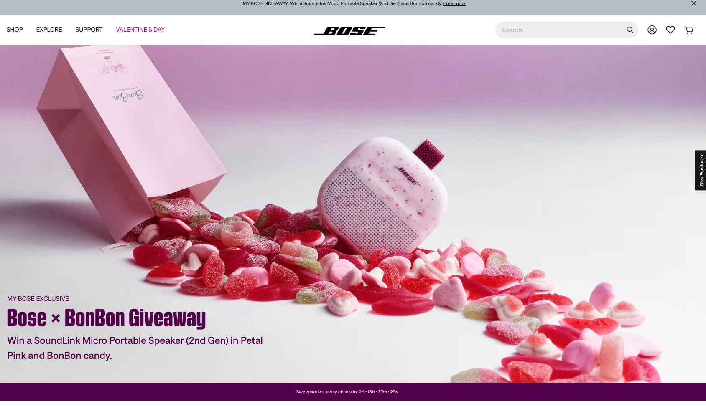
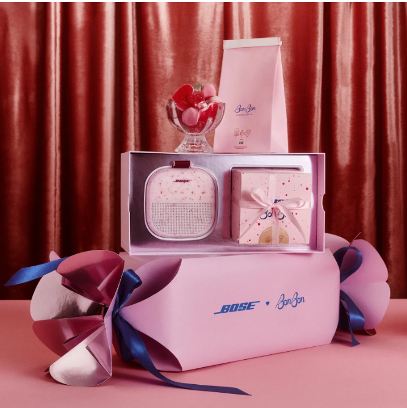
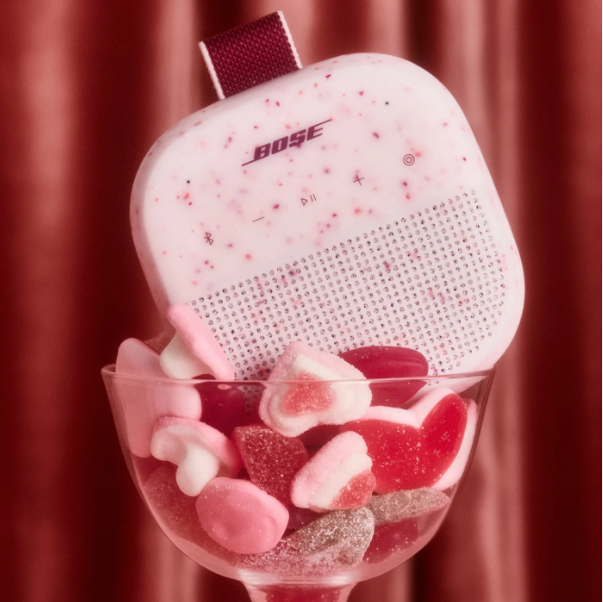
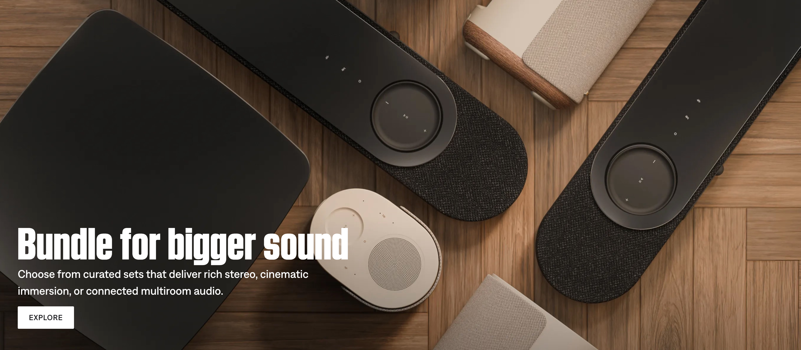
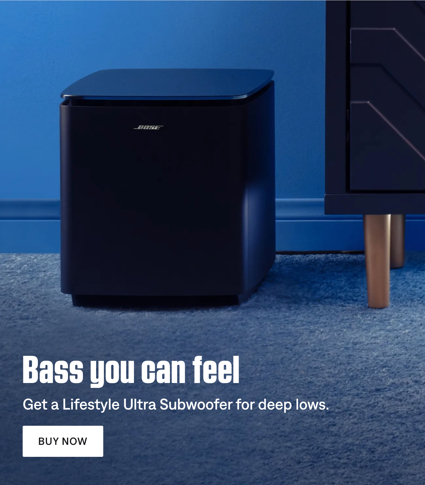
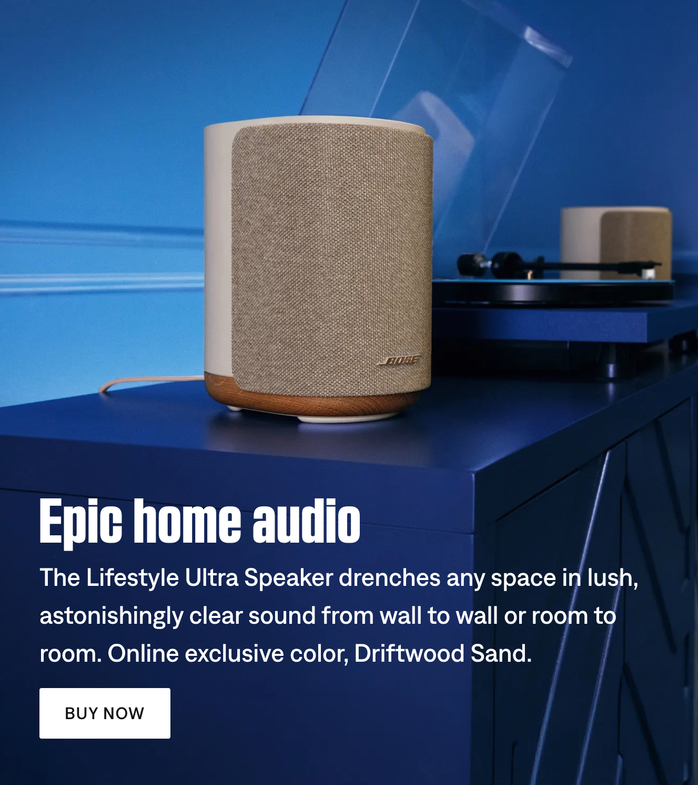
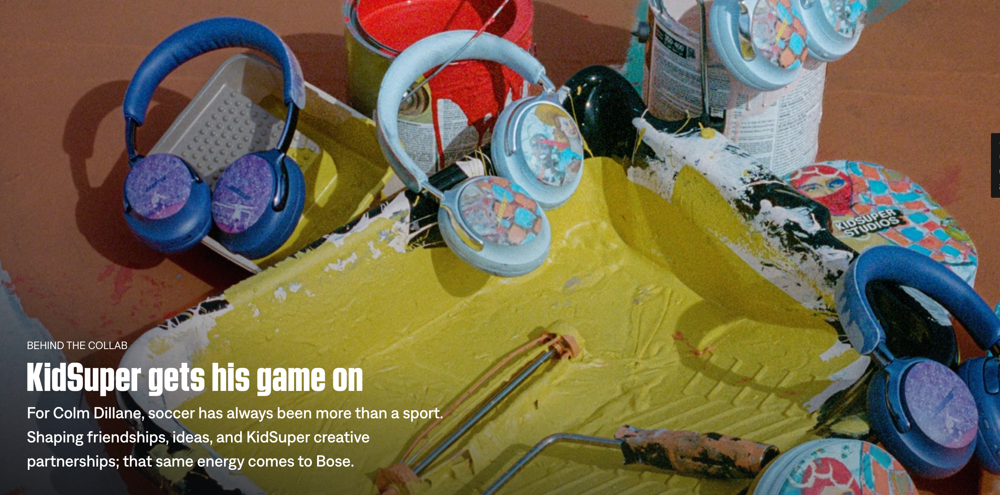
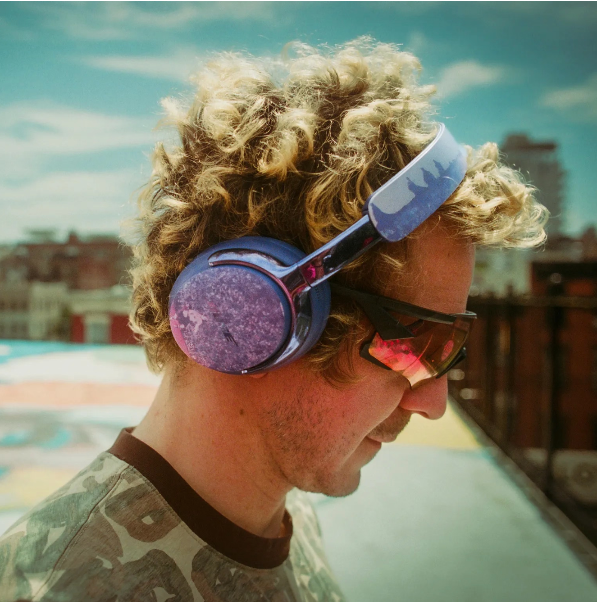
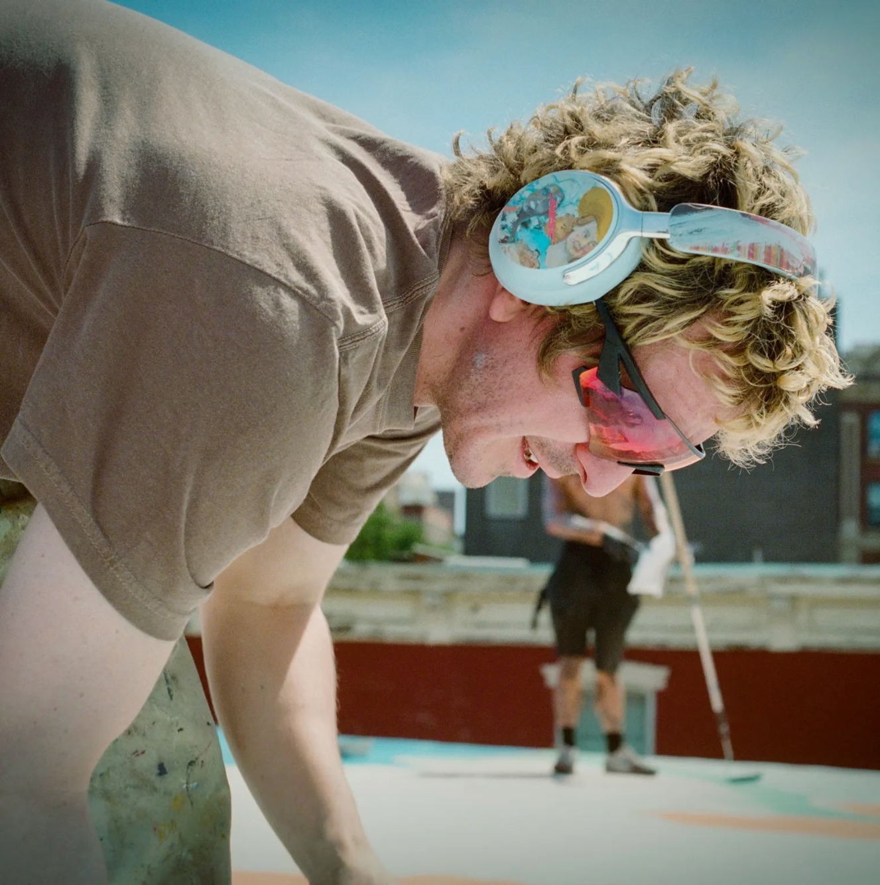

Professional work · In production
Real pages, published at scale, for a global audio brand. As part of a four-person cross-functional team I helped build, QA, and maintain e-commerce and marketing content across six global sites.
Bose delivers immersive audio experiences across a global e-commerce and marketing web presence. As part of a lean four-person team, I work directly with cross-functional stakeholders — marketing, UX, engineering, and external agency partners — to publish and maintain content that spans product launches, influencer collaborations, and seasonal campaigns.
All updates and changes are managed through Jira to ensure clear ticketing, workflow organization, and accountability across the team.
Partnered with UX, marketing, and engineering to translate design and content requirements into structured, scalable configurations in Contentstack and Adobe Experience Manager, ensuring consistency across preview, staging, and production environments.
Defined and executed QA processes to validate accessibility, layout consistency, and design fidelity across environments, catching and resolving issues before they reached production.
Led content and design translation for Bose's migration from Adobe Experience Manager to Salesforce Commerce Cloud across six global sites. Established cross-functional workflows to keep UX, engineering, and marketing aligned through a smooth, on-time launch.
Owned end-to-end design execution for high-profile campaign collaborations including Coco Gauff, BonBon, and KidSuper, balancing Bose's design system standards with each partner's brand identity and campaign goals.
Advised on information architecture and content structure, implementing structured metadata, title tags, meta descriptions, and clean URL [patterns...]. Send me the rest of this one and I'll finish it in the same voice.
A selection of live pages I helped build and publish across Bose's global web presence. Each entry includes the page type and my specific role in bringing it to life.



Valentine's Day Limited Edition
A limited-edition collaboration between Bose and New York candy brand BonBon, transforming a product launch into an immersive Valentine's Day campaign through custom packaging, exclusive giveaways, and editorial storytelling.



Global Launch
A global campaign introducing Bose's newest connected home audio ecosystem, showcasing how three flagship products work together to create a seamless, room-to-room listening experience.



Limited Edition Collaboration
A limited-edition collaboration between Bose and fashion designer KidSuper, combining exclusive artwork, immersive storytelling, and ecommerce into a collectible product experience inspired by the spirit of soccer.
Working at Bose taught me how to ship at scale. From global platform migrations to limited-edition brand collaborations, every release required balancing design systems, content strategy, engineering constraints, and cross-functional communication while keeping dozens of moving pieces aligned.
It's also where my support engineering background became directly useful. Understanding how CMS systems, staging environments, and deployment pipelines work meant I could troubleshoot faster, communicate more precisely with engineering, and anticipate problems before they hit production.